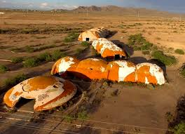

Discover Casa Grande
Picacho Peak
Picacho Peak isn't directly located in Casa Grande, it is near the city on the way to Tucson. It is widely known for its historic battle. If you are lucky you may even catch the reenactmate.
Casa Grande Valley Historical Society
A detailed description of Casa Grande can be explained here. As this museum will take you from the gold and cattle history to even native americans before the arrival of settlers.
Pinal County Historical Museum
This museum preserves what is left of the Pinal County area. There are some native american history in here as well.
The Domes
The haunted Casa Grande Domes are a sight to see. Even in the night time for those that are willing to go. Be warn as they are on private property.
Casa Grande Ruins
These ruins were found in the 17th century, not much are known about these. This is a good place to take some pictures.